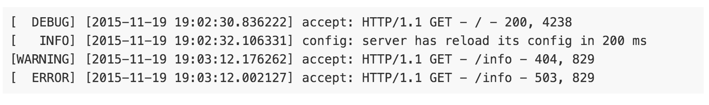
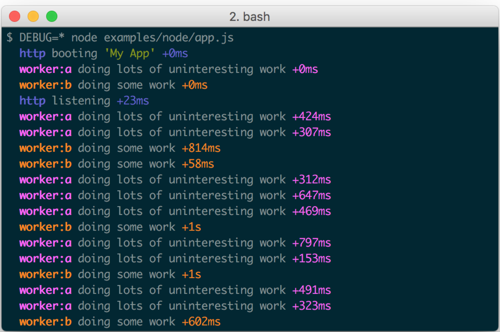

Замыкание — это функция, «запомнившая» часть окружения, где она была задана. Функция замыкает в себе идентификаторы (все, что мы определяем) из лексической области видимости.
Логгирование — неотъемлемая часть разработки. Для понимания того, что происходит внутри кода, используют специальные библиотеки, с помощью которых можно логгировать (выводить) информацию о проходящих внутри процессах, например в файл. Типичный лог веб-сервера, обрабатывающего HTTP запросы выглядит так:
 https://github.com/visionmedia/debug debug — это функция, которая принимает на вход неймспейс в виде строки и возвращает другую функцию, которая уже используется для логгирования.